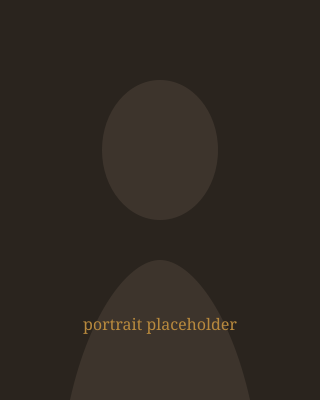

About
如月 澪
ジャズボーカル / 作詞 · 東京
短い紹介
小さなクラブの灯りを好む架空のボーカリスト。言葉の間と息の長さを大切に歌います。
プロフィール（写真あり）

Japanese
如月澪（きさらぎ・みお）は、架空の設定で生まれたジャズボーカリストです。学生時代に合唱と演劇を経験したのち、都内のセッションバーでスタンダードを歌い始めました。オリジナルでは都市の夜景と川の湿度をモチーフにした歌詞を書き、トリオからクインテットまで編成を変えて公演しています。
本テキストは CMS Kit の About 読み取り・多言語ブロック試験用であり、実在の経歴ではありません。
長いプロフィール（日本語）
活動の中心は、客席との距離が近いクラブ公演です。セットリストはスタンダードを骨格に、オリジナルを数曲挿入する構成が多いです。共演はピアノ、ベース、ドラムを基本とし、ゲストにサックスやギターを迎えることもあります。
録音では残響を控え、声の輪郭が残るミックスを好みます。ライブでは逆に、部屋の空気を含んだ音を大切にしています。ワークショップや公開リハーサルも不定期で行い、歌の運び方について短いトークを交えることがあります。
この段落はレイアウト用の長文サンプルです。改行や段落分割が CMS 側で保持されるかを確認するためのダミー文章を続けます。架空の賞歴や実在フェスティバル名は意図的に記載していません。
English profile
English
Mio Kisaragi is a fictional jazz vocalist created for Musician CMS Kit verification. Her repertoire mixes standards with original songs about city nights and riverside air. She performs mainly in intimate clubs with piano trio settings, occasionally expanding to larger ensembles.
This English block is intentional bilingual content for future About adapters — not a translation of a real biography.
写真なしブロック（markup 試験）
写真スロットを持たない紹介文の例です。画像欠落時でも見出しと本文だけで成立する markup を想定しています。
共演者
-
青葉 蓮
架空のピアニスト。ハーモニーの余白を残す伴奏を得意とします。
-
黒瀬 透
写真スロットのない共演者カード。テキストのみで成立するパターン。
-
南 梢
ブラシワークを中心にした架空ドラマー。